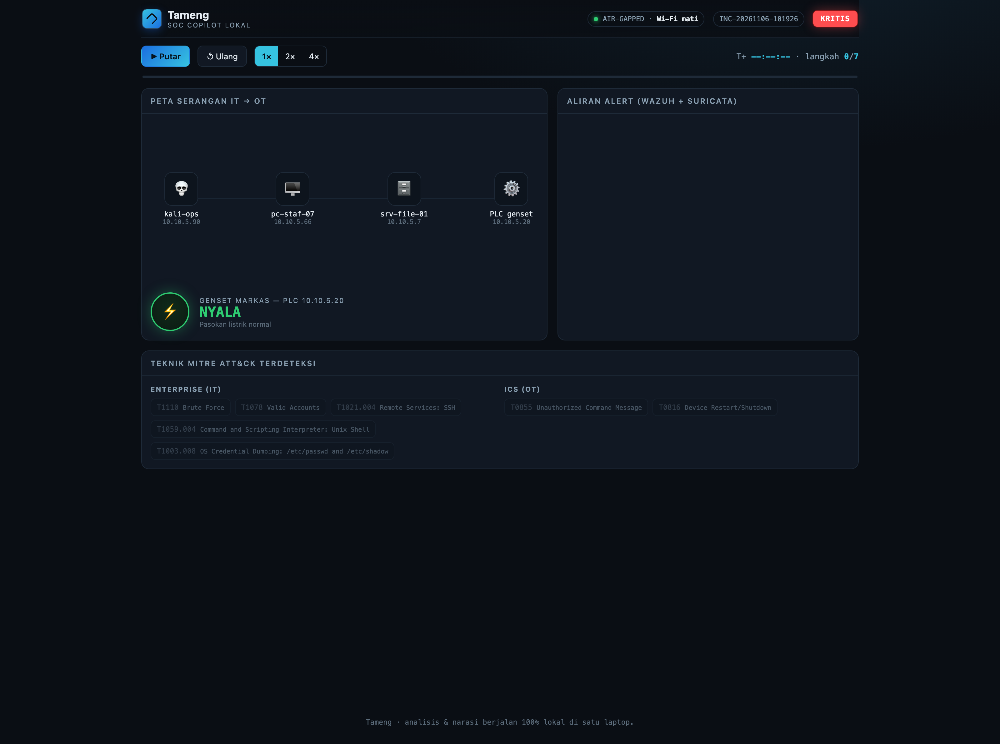
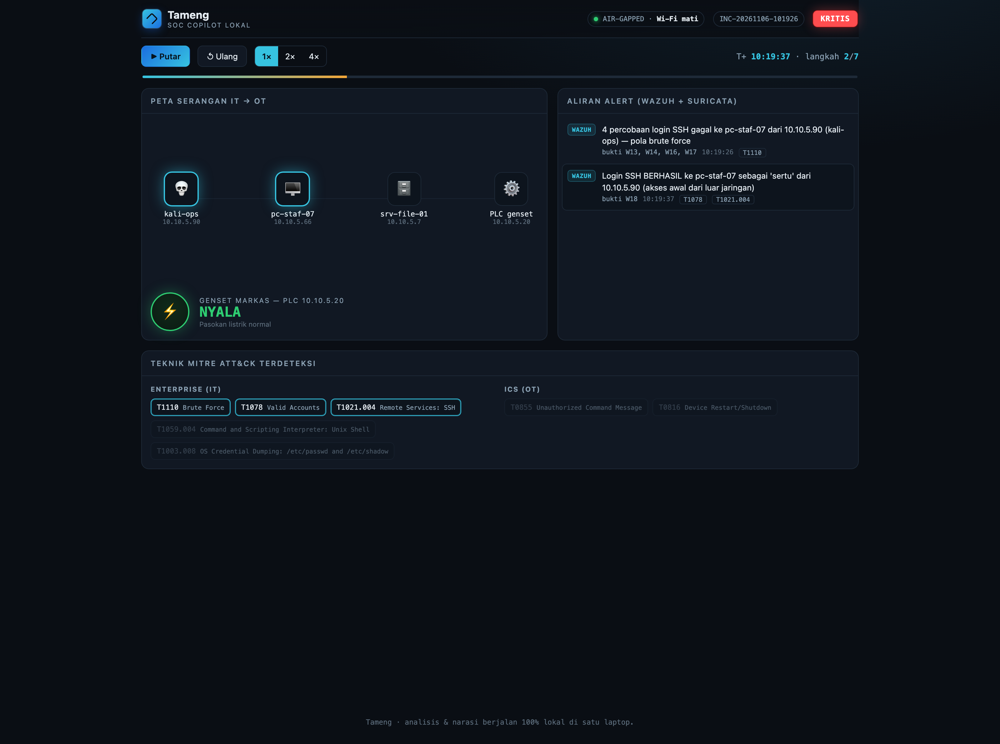
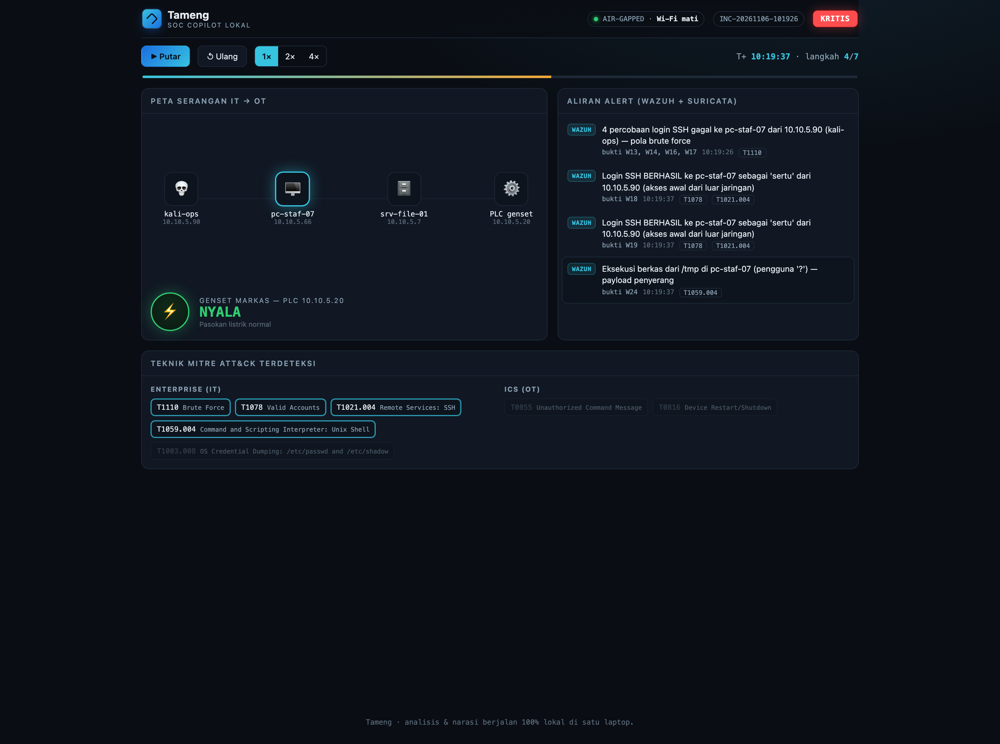
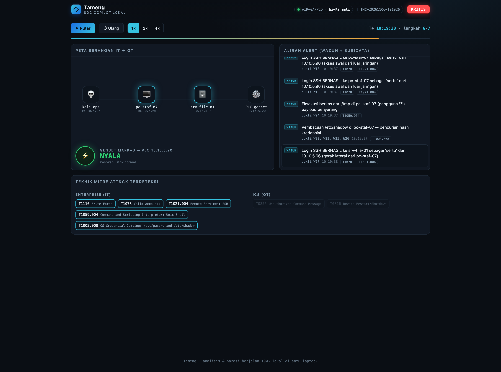
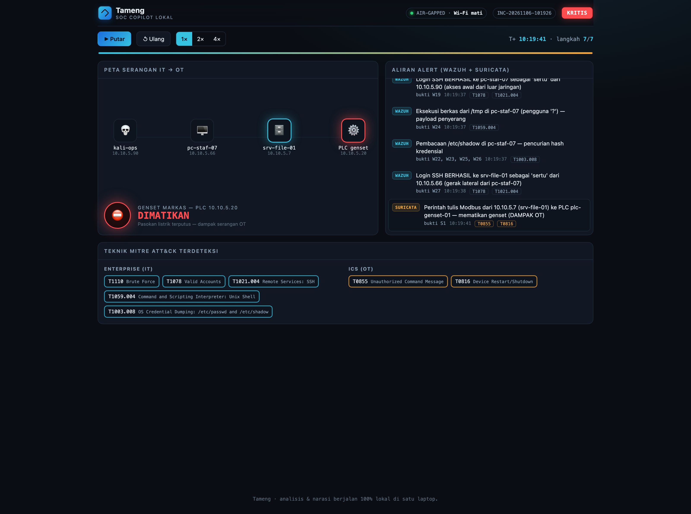

Masalah
Markas satuan kini hidup di jaringan.
Ancamannya nyata
0miliar
anomali trafik ke Indonesia, Januari sampai November 2025 (BSSN)
JUNI 2024
Ransomware melumpuhkan Pusat Data Nasional. 282 instansi terdampak.
JUNI 2024
Data yang diklaim milik BAIS TNI dijual di forum gelap.
Sumber: BSSN via Investortrust, Bisnis.com (2025); Detik, Investortrust (2024)
0
alert dalam 4 menit
13
yang berkaitan dengan serangan
Log Wazuh asli · lab Tameng 6 Nov 2026
Solusi yang sudah ada
Alatnya sebenarnya sudah ada
SIEM dan IDS
Wazuh, Suricata. Gratis dan andal untuk mendeteksi.
Copilot AI komersial
Microsoft Security Copilot, Google SecOps.
Platform keamanan OT
Nozomi, Claroty, Dragos untuk PLC dan mesin industri.
Otomasi buatan sendiri
Alur n8n yang mengirim alert ke GPT.
Masalahnya
Setiap solusi punya lubang
SIEM dan IDS
Wazuh, Suricata
Satu alert per kejadian. Merangkai cerita serangan tetap tugas manusia.
Copilot AI komersial
Microsoft, Google
Data diproses di cloud asing. Tidak boleh untuk data militer.
Platform keamanan OT
Nozomi, Claroty, Dragos
Harga jauh di luar anggaran satuan.
Otomasi buatan sendiri
n8n + GPT
Isi insiden keluar ke server luar negeri.
Tameng
Analis insiden IT/OT yang bekerja di dalam satuan
Di atas Wazuh + SuricataLaporan bahasa Indonesia1 laptop · tanpa internet
Proses kerja · lab
Kami membangun markas mini di satu laptop
kali-opspenyerang · 10.10.5.90
PLC genset10.10.5.20 · Modbus
Wazuh menjaga sisi ITlogin, eksekusi berkas, akses /etc/shadow
Suricatajaringan kendali OT
6 container Docker · 685 MB RAM · MacBook Air 16 GB
kali-ops · bash lab/scripts/attack.sh
plc-genset-01 · log PLC
GENSET NYALA
10:19:24,635 PERINTAH TULIS coil0=1
-> GENSET NYALA
Serangan sungguhan di lab · output asli 6 Nov 2026





Dashboard Tameng · data asli 6 NovDirangkai kode, bukan tebakan AI
AI lokal · Qwen 2.5 7B · tanpa internet
Narasi AI · contoh uji
DITOLAK
Ringkasan cadangan dari kode
Penyerang dari 10.10.5.90 menyasar pc-staf-07, srv-file-01, plc-genset-01, lalu mengirim perintah tulis tak sah ke PLC.
Manfaat bagi satuan
Analis menerima cerita, bukan tumpukan alert
654→1alert mentah menjadi satu insiden dengan 13 bukti
±1,5 mntdari bukti mentah sampai laporan berbahasa Indonesia
0data yang keluar dari jaringan satuan
1 laptop16 GB, perangkat lunak open-source
Mengapa Tameng
Satu-satunya yang memenuhi keempatnya
| SIEM/IDS | Copilot AI | Platform OT | Tameng |
|---|
| Merangkai insiden | tidak | ya | sebagian | ya |
| Data tetap di satuan | ya | tidak | ya | ya |
| IT dan OT sekaligus | sebagian | sebagian | OT saja | ya |
| Biaya untuk satuan | rendah | tinggi | sangat tinggi | rendah |
Langkah berikutnya: pilot di satu markas.
Tameng
Analis insiden yang bekerja di dalam satuan, untuk satuan
Kartika Cyber Hackathon 2026 · Defensive Shield